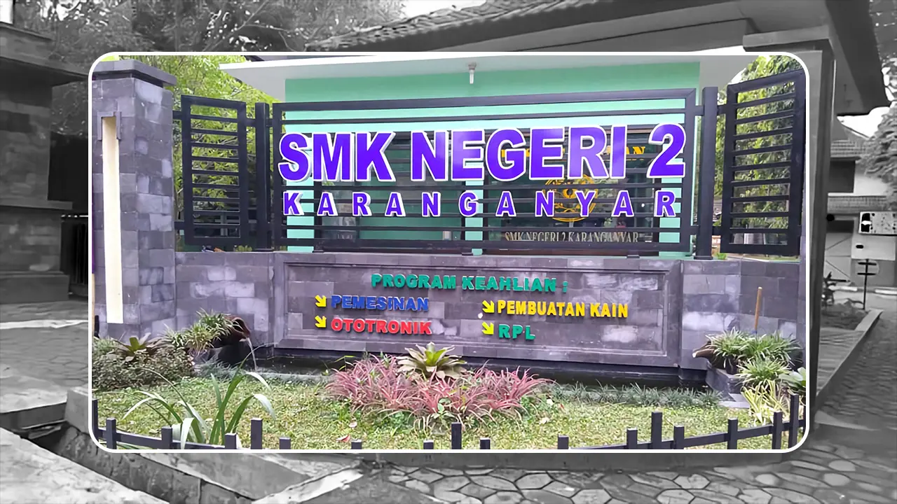

Pending


Judul Laporan: Permohonan Perbaikan AC
Dikirim oleh Galang Pratama pada 22 Juli 2025, 08:30
Ditujukan Kepada: Kesiswaan
AC di ruang kelas XI RPL B tidak berfungsi sejak kemarin, mohon segera diperbaiki agar proses belajar tetap nyaman.
Menunggu Persetujuan
Laporan kamu sedang diproses oleh admin.